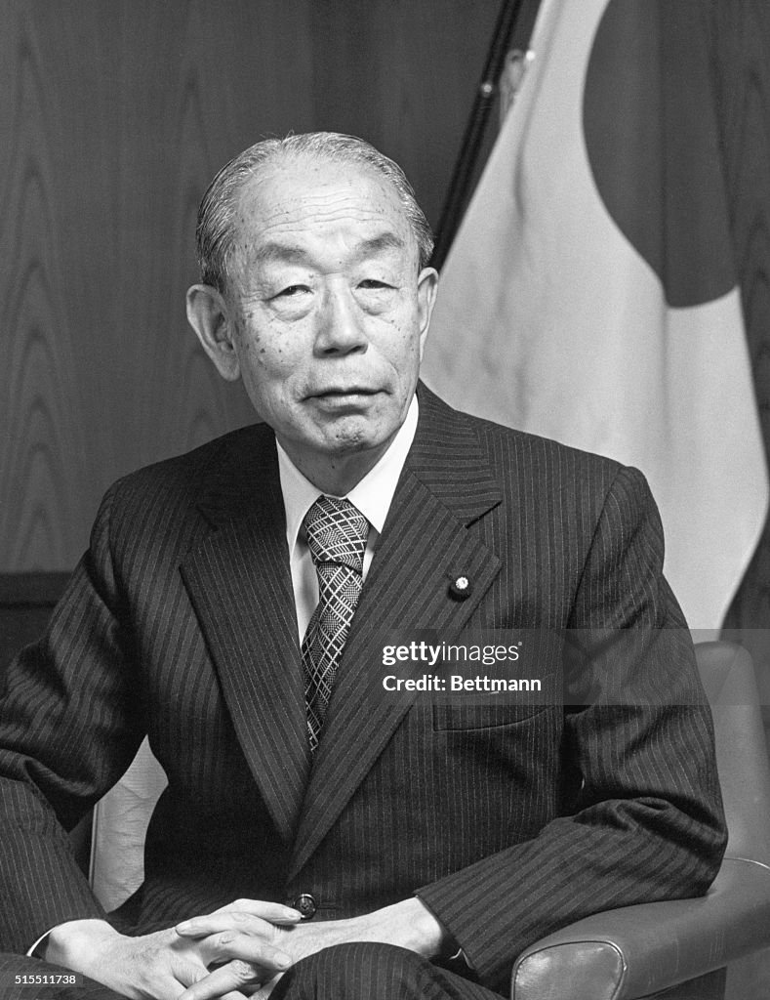

orn in Tokyo, Fukada had a father who was a film aficionado and he watched many films on VHS when he was young.[1][2] It was when he was 19 years old studying at Taisho University

fukuda
japonais good guy
orn in Tokyo, Fukada had a father who was a film aficionado and he watched many films on VHS when he was young.[1][2] It was when he was 19 years old studying at Taisho University